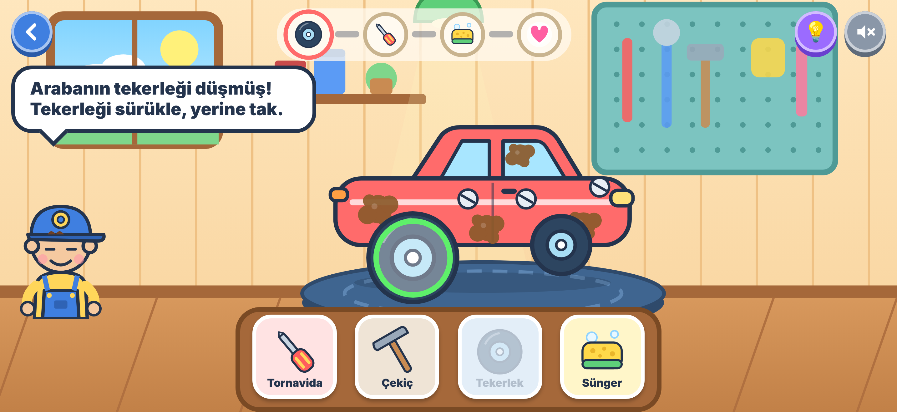

Minik Tamirci
Can Usta'nın atölyesinde oyuncakları tamir et! 3–7 yaş için sürükle-bırak tamir oyunu.

- Tekerlek tak, vida sık, çamuru ovala, lastiği şişir
- Tutkalla çatlakları kapat, fırçayla istediğin renge boya
- Çıkartmalarla süsle, tamir edilen oyuncak canlansın
- Okuma bilmeyen çocuklar için Türkçe sesli yönergeler
- Reklam yok, satın alma yok, internet gerekmez, veri toplanmaz
Destek · Gizlilik Politikası · Kullanım Koşulları
© 2026 Semanur Gülcan